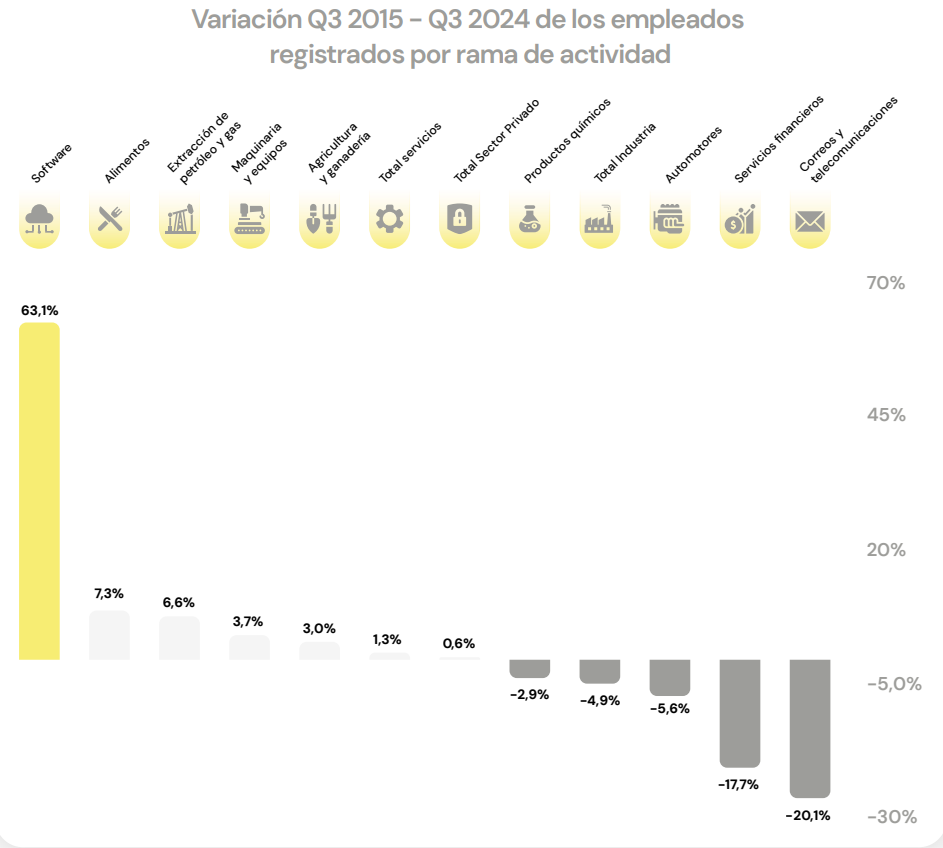
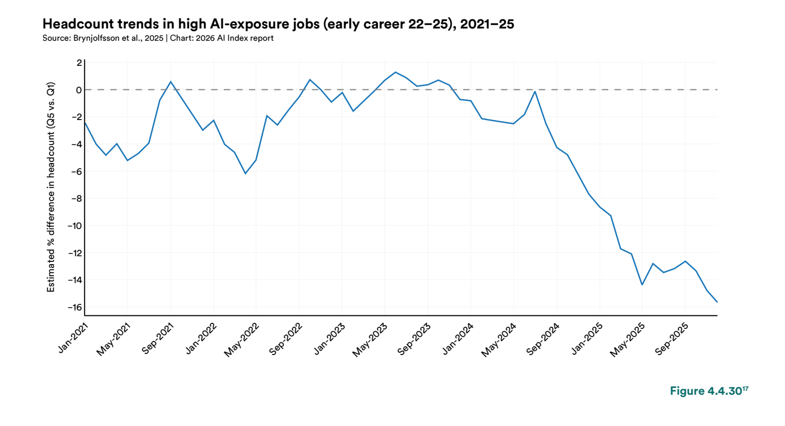
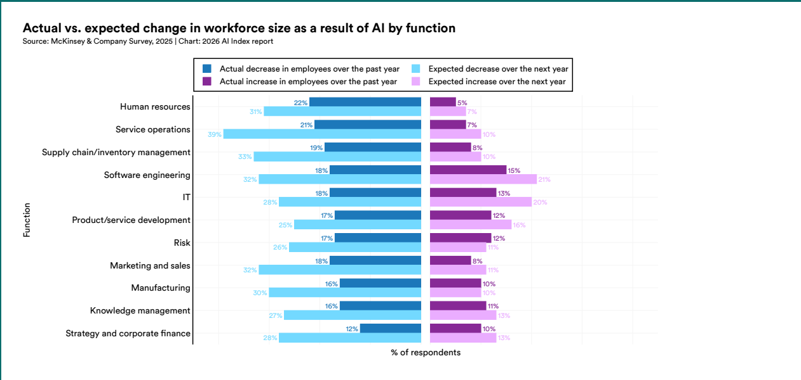
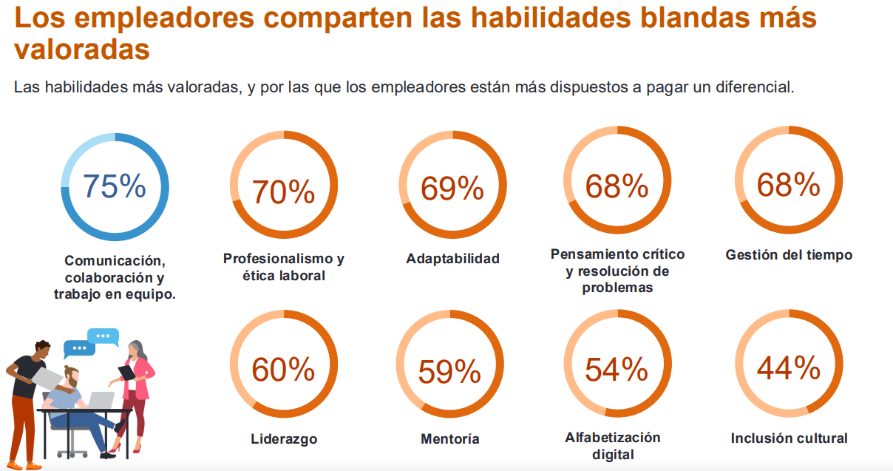
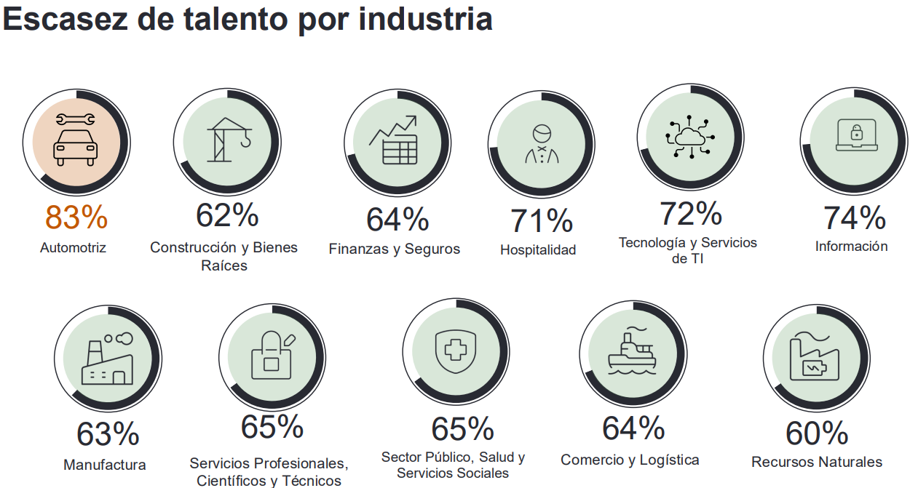
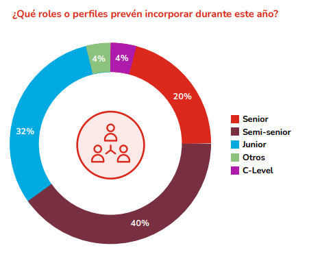

Impacto percibido de la IA generativa en el ingreso de devs junior al mercado IT de CABA
José Francisco Juarez · Tomás Bruner
UCEMA · Lenguajes Formales · 2026
empleo en devs de 22–25 años desde 2024
Stanford AI Index Report, 2026
El debate
La IA reduce, en términos absolutos, los puestos para juniors sin experiencia.
No elimina la demanda: la desplaza hacia quien sabe orquestar la IA.
no son excluyentes

Fuente: CESSI/OPSSI, 2026.
CESSI · 2025
Antes
Falta de recursos calificados
→ 1.º problema
Hoy
→ 5.º. Falta de demanda → 2.º
Fuente: CESSI/OPSSI, 2026.

Headcount devs 22–25 en ocupaciones high-AI-exposure. Stanford AI Index 2026 (Fig. 4.4.30).

McKinsey & Company Survey, vía AI Index 2026 (Fig. 4.4.34).
H1 · El mecanismo
Tickets repetitivos → IA
Funciones acotadas → IA
Boilerplate → IA
Lo que hacía el junior, lo hace el IDE.

ManpowerGroup Argentina, Q3 2026 (p. 15).

ManpowerGroup, Escasez de Talento 2026 (p. 6).

Adecco Argentina, Informe Mercado Laboral 2026 (p. 7).
H2 · El giro
El junior valorado deja de ser quien ejecuta. Empieza a ser quien evalúa la salida y se hace cargo.
Implicancias
Junior →
Orquestar la IA, no competirle.
Universidad →
Evaluar con IA encima de la mesa.
Empresa →
Junior = aprendizaje guiado, no mano de obra barata.
La voz local
Fundador de una HR especializada en IT de Buenos Aires. Coloca devs todos los días.
Entrevista en profundidad · 24 de junio de 2026
Entrevista · El giro
"Un poco más en jaque el semi-senior que el junior."
La IA no destruye la posición junior: la acelera. La rampa para volverse semi-senior se comprime.
2 años → 6 meses
Alan · de/Recruiters · 24 jun 2026
Entrevista · Qué buscan
"Output rápido. Que se anime y haga cosas."
El atributo central —difícil de traducir— es accountability: hacerse cargo del resultado sin pedir una estructura de soporte para ejecutar.
Caso real: entró mandando un producto funcionando por mail, sin proceso formal.
Entrevista · La jerarquía
"La blanda va a ser la hard, pero la hard no va a ser la blanda."
La actitud y la adaptación marcan el techo del perfil. Lo técnico es entrenable. La IA solo volvió imposible ocultar esa jerarquía.
Alan · de/Recruiters · 24 jun 2026
Conclusión
H1
Respaldo robusto global — pero no se replica en Argentina: +4.089 empleos netos, ENE IT +22%.
H2
Respaldo convergente en todas las fuentes: la demanda se desplaza hacia criterio y orquestación.
El de mayor riesgo no es el junior. Es el semi-senior.
Se come la versión del junior que esperaba que el mercado viniera a buscarlo.
El que llega con algo construido, pregunta sin permiso y se hace cargo — tiene más demanda que nunca.
¿La IA se come a los juniors? — No al que no espera.
José Francisco Juarez · Tomás Bruner
UCEMA · Lenguajes Formales · 2026